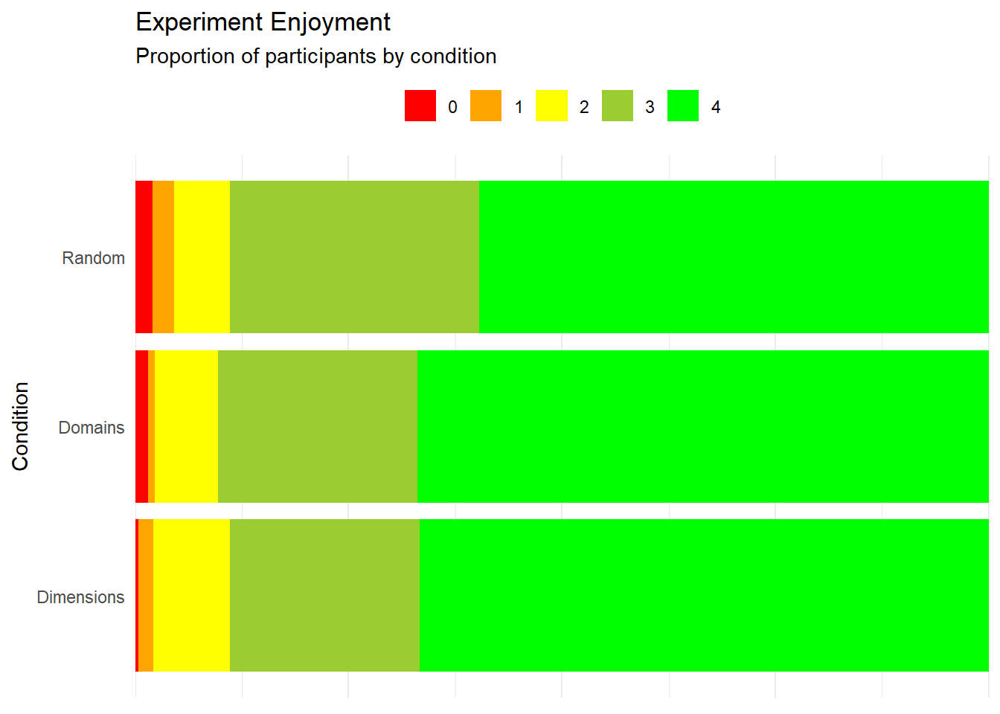
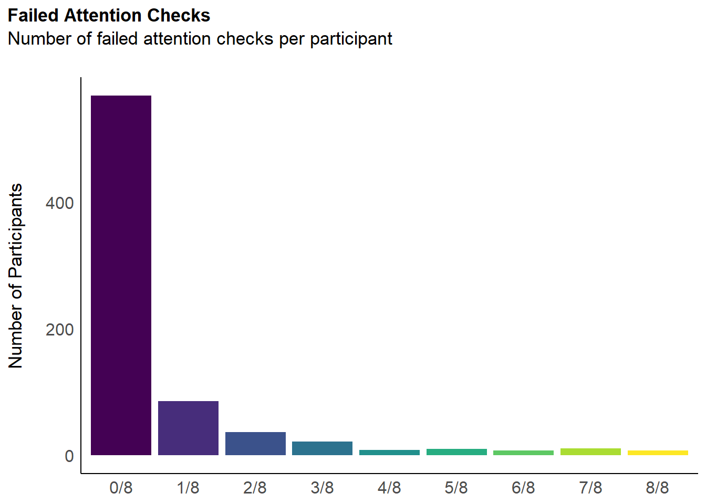
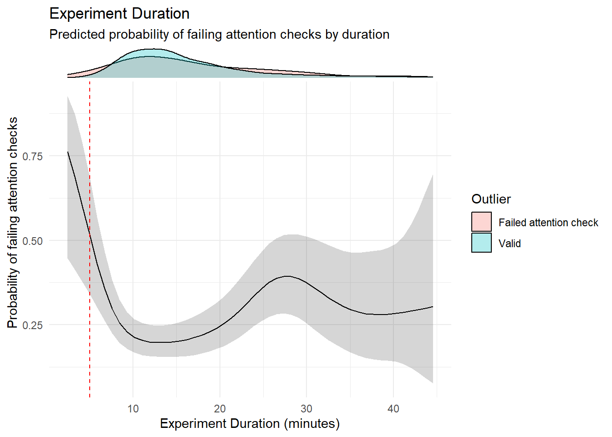
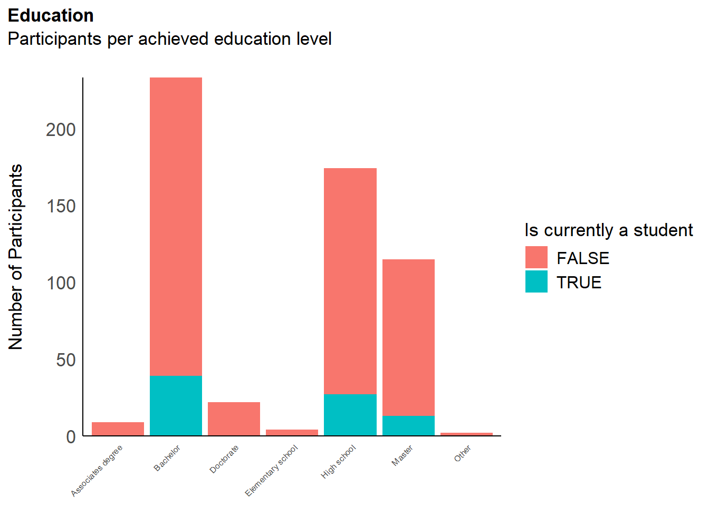
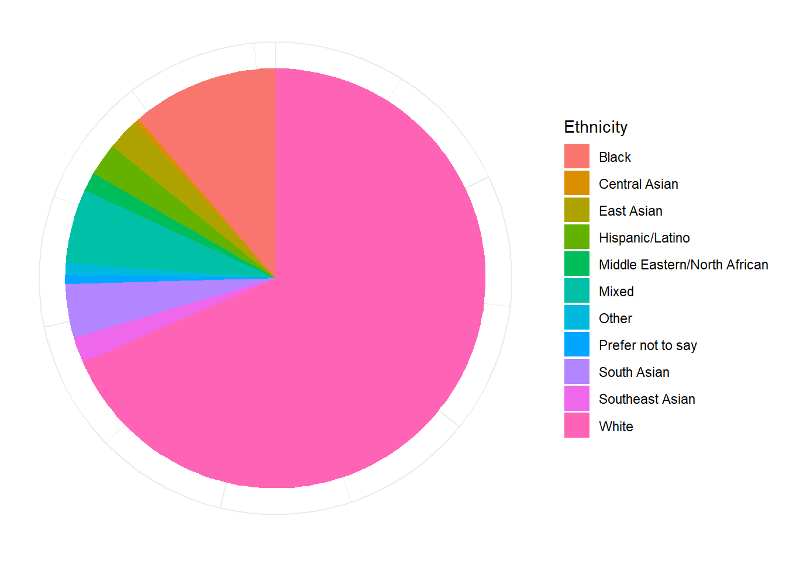
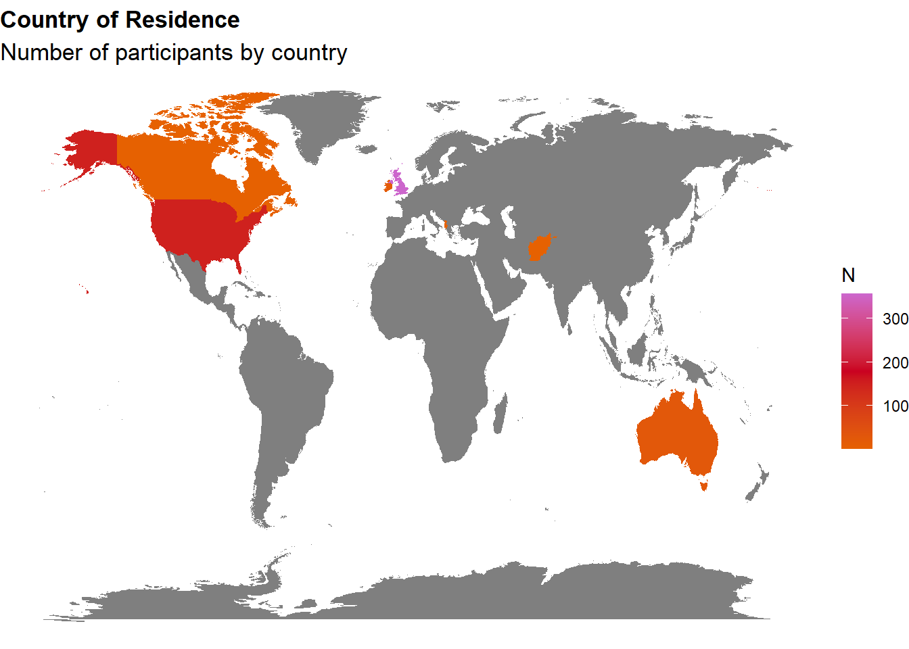
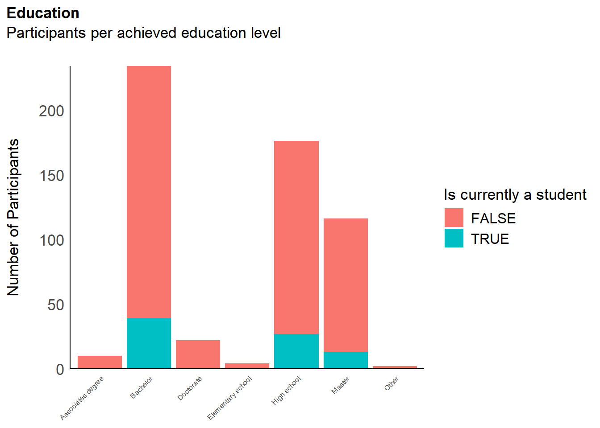

library(tidyverse)
library(easystats)
library(patchwork)
library(ggside)
library(ggdist)
df <- read.csv("../data/rawdata_participants.csv")Interoception Scale - Data Cleaning
Data Preparation
Feedback
Experiment Enjoyment
Code
df |>
summarise(n = n(), .by=c("Condition", "Experiment_Enjoyment")) |>
filter(!is.na(Experiment_Enjoyment)) |>
mutate(n = n / sum(n),
Experiment_Enjoyment = fct_rev(as.factor(Experiment_Enjoyment)),
.by="Condition") |>
ggplot(aes(y = Condition, x = n, fill = Experiment_Enjoyment)) +
geom_bar(stat="identity", position="stack") +
scale_fill_manual(values=c("green", "yellowgreen", "yellow", "orange", "red")) +
scale_x_continuous(expand=c(0, 0)) +
labs(title="Experiment Enjoyment",
subtitle="Proportion of participants by condition") +
guides(fill = guide_legend(reverse=TRUE)) +
theme_minimal() +
theme(axis.title.x = element_blank(),
axis.text.x = element_blank(),
legend.position = "top",
legend.title = element_blank())
Code
lm(Experiment_Enjoyment ~ Condition, data = df) |>
modelbased::estimate_contrasts(p_adjust="none", contrast = "Condition") |>
display()| Level1 | Level2 | Difference | 95% CI | SE | t(703) | p |
|---|---|---|---|---|---|---|
| Dimensions | Random | 0.12 | (-0.03, 0.27) | 0.08 | 1.58 | 0.115 |
| Domains | Dimensions | 7.50e-04 | (-0.15, 0.15) | 0.08 | 9.91e-03 | 0.992 |
| Domains | Random | 0.12 | (-0.02, 0.27) | 0.08 | 1.63 | 0.103 |
Marginal contrasts estimated at Condition p-values are uncorrected.
Exclusions
Code
outliers <- list()Attention Checks
Code
dfchecks <- df |>
dplyr::mutate(
# "I always know that I am attentively doing a study"
A1 = ifelse(Sexual_State_A == 6 | Sexual_State_A == 5, 0, 1),
# "Even if I am anxious, I should now answer all the way to the left"
A2 = ifelse(Anxious_SkinThermo_A == 0, 0, 1),
# "I often experience sensations, and I will answer zero to this question"
A3 = ifelse(Nociception_ColonBladder_A == 0, 0, 1),
# "In general, I am very sensitive and attentive to the questions I am currently answering"
A4 = ifelse(Sensitivity_Cardiac_A == 6 | Sensitivity_Cardiac_A == 5, 0, 1),
# "I often pay attention to the answers I am giving"
A5 = ifelse(Sensitivity_Gastric_A == 6 | Sensitivity_Gastric_A == 5, 0, 1),
# "I can always accurately answer to the left on this question to show that I am reading it"
A6 = ifelse(Accuracy_Respiratory_A == 0 | Accuracy_Respiratory_A == 1, 0, 1),
# "I can always accurately perceive that to this question I should answer the lowest option"
A7 = ifelse(Accuracy_Genital_A == 0, 0, 1),
# "Sometimes I notice that I need to answer all the way to the right"
A8 = ifelse(Confusion_ColonBladder_A == 6, 0, 1),
.keep = "none"
)
dfchecks$Total <- rowSums(dfchecks)
dfchecks |>
mutate(Total = as.factor(paste0(Total, "/8"))) |>
ggplot(aes(x = Total)) +
geom_bar(aes(fill = Total)) +
scale_fill_viridis_d(guide = "none") +
labs(title = "Failed Attention Checks", y = "Number of Participants", subtitle = "Number of failed attention checks per participant") +
theme_modern(axis.title.space = 15) +
theme(
plot.title = element_text(size = rel(1.2), face = "bold", hjust = 0),
plot.subtitle = element_text(size = rel(1.2), vjust = 7),
axis.title.x = element_blank(),
)
Code
outliers$attentionchecks <- df$Participant[dfchecks$Total >= 1]We removed 187 (25.55%) participants for having failed at least 1 attention check (out of 8).
Multivariate Distance
Code
# Compute distance
dfoutlier <- performance::check_outliers(select(df, contains("_Q")),
method=c("lof"),
threshold=list(lof = 0.0001)) |>
as.data.frame() |>
mutate(Participant = fct_reorder(df$Participant, Distance_LOF),
Outlier_AttentionCheck = ifelse(Participant %in% outliers$attentionchecks, 1, 0),
Outlier = ifelse(Outlier_LOF == 1, "Distance Outlier", "Valid"),
Outlier = ifelse(Outlier_AttentionCheck == 1, "Failed Attention Check", Outlier))
outliers$distance <- as.character(dfoutlier[dfoutlier$Outlier_LOF == 1, "Participant"])
outliers$distance <- outliers$distance[!outliers$distance %in% outliers$attentionchecks]
dfoutlier |>
ggplot(aes(x=Participant, y=Distance_LOF)) +
geom_bar(aes(fill=Outlier), stat="identity") +
theme_minimal() +
theme(axis.text.x = element_blank())
Mahalanobis distance (De Maesschalck, Jouan-Rimbaud, and Massart 2000) is commonly used to detect multivariate outliers, which are data points with unusual combinations of scores on two or more variables (Filzmoser 2016). This distance is calculated relative to the centroid—a central point where the means of all variables intersect—with larger distances indicating greater deviation from the center.
This measure takes into account correlations within the dataset, which is especially useful when trying to refine and validate a questionnaire with overlapping items.
We removed 8 (1.09%) participants based on multivariate distance.
Predictors
Code
dfoutlier <- full_join(dfoutlier, select(df, Participant, Experiment_Duration), by = join_by(Participant))
parameters::parameters(glm(Outlier_AttentionCheck ~ Distance_LOF, data = dfoutlier, family = "binomial"))Parameter | Log-Odds | SE | 95% CI | z | p
----------------------------------------------------------------
(Intercept) | -0.91 | 0.11 | [-1.14, -0.69] | -7.99 | < .001
Distance LOF | -1.95 | 0.97 | [-3.90, -0.08] | -2.00 | 0.045
Uncertainty intervals (profile-likelihood) and p-values (two-tailed)
computed using a Wald z-distribution approximation.
The model has a log- or logit-link. Consider using `exponentiate =
TRUE` to interpret coefficients as ratios.Code
parameters::parameters(glm(Outlier_AttentionCheck ~ poly(Experiment_Duration, 2), data = dfoutlier, family = "binomial"))Warning: glm.fit: fitted probabilities numerically 0 or 1 occurredParameter | Log-Odds | SE | 95% CI | z | p
--------------------------------------------------------------------------------------
(Intercept) | 0.02 | 0.71 | [-0.53, 1.45] | 0.03 | 0.975
Experiment Duration [1st degree] | 780.61 | 500.57 | [-1.13, 1787.70] | 1.56 | 0.119
Experiment Duration [2nd degree] | 202.25 | 131.81 | [-1.45, 467.26] | 1.53 | 0.125
Uncertainty intervals (profile-likelihood) and p-values (two-tailed)
computed using a Wald z-distribution approximation.Code
parameters::parameters(glm(Distance_LOF ~ poly(Experiment_Duration, 2), data = dfoutlier))Parameter | Coefficient | SE | 95% CI | t(729) | p
-------------------------------------------------------------------------------------------
(Intercept) | 0.09 | 3.42e-03 | [ 0.08, 0.09] | 25.15 | < .001
Experiment Duration [1st degree] | -0.04 | 0.09 | [-0.23, 0.14] | -0.48 | 0.631
Experiment Duration [2nd degree] | -0.04 | 0.09 | [-0.23, 0.14] | -0.49 | 0.627
Uncertainty intervals (profile-likelihood) and p-values (two-tailed)
computed using a Wald t-distribution approximation.Code
r_full <- cor(select(df, contains("_Q")))
r_cleaned <- filter(df, !Participant %in% c(outliers$attentionchecks, outliers$distance)) |>
select(contains("_Q")) |>
cor()
data.frame(Full=r_full[lower.tri(r_full)], Clean=r_cleaned[lower.tri(r_cleaned)]) |>
pivot_longer(everything()) |>
ggplot(aes(x=value)) +
geom_histogram(aes(fill=name, color=name), bins=60, alpha=0.3, position="identity") +
theme_minimal()df <- filter(df, !Participant %in% c(outliers$attentionchecks, outliers$distance))Final Sample
- The final sample includes 537 participants (Mean age = 37.0, SD = 12.4, range: [18, 77]; Gender: 51.0% women, 47.9% men, 1.12% non-binary; Education: Bachelor, 42.09%; Doctorate, 3.91%; Elementary school, 0.56%; High school, 29.42%; Master, 20.11%; Other, 3.91%; Country: 63.50% United Kingdom, 27.00% United States, 9.50% other).
Code
p_age <- df |>
ggplot(aes(x = Age, fill = Gender)) +
geom_histogram(data=df, aes(x = Age, fill=Gender), binwidth = 2) +
geom_vline(xintercept = mean(df$Age), color = "red", linewidth=1.5, linetype="dashed") +
scale_fill_viridis_d() +
scale_x_continuous(expand = c(0, 0), breaks = seq(20, max(df$Age), by = 10 )) +
scale_y_continuous(expand = c(0, 0)) +
labs(title = "Age", y = "Number of Participants", color = NULL, subtitle = "Distribution of participants' age") +
theme_modern(axis.title.space = 10) +
theme(
plot.title = element_text(size = rel(1.2), face = "bold", hjust = 0),
plot.subtitle = element_text(size = rel(1.2), vjust = 7),
axis.text.y = element_text(size = rel(1.1)),
axis.text.x = element_text(size = rel(1.1)),
axis.title.x = element_blank()
)
p_ageCode
# Did not add education disciplines
p_edu <- df |>
mutate (Student = ifelse(is.na(Student), FALSE, Student)) |>
ggplot(aes(x = Education)) +
geom_bar(aes(fill = Student)) +
scale_y_continuous(expand = c(0, 0), breaks= scales::pretty_breaks()) +
labs(title = "Education", y = "Number of Participants", subtitle = "Participants per achieved education level", fill = "Is currently a student") +
theme_modern(axis.title.space = 15) +
theme(
plot.title = element_text(size = rel(1.2), face = "bold", hjust = 0),
plot.subtitle = element_text(size = rel(1.2), vjust = 7),
axis.text.y = element_text(size = rel(1.1)),
axis.text.x = element_text(size = rel(0.5), angle = 45, hjust =1),
axis.title.x = element_blank()
)
p_edu
Code
p_eth <- df |>
mutate(Ethnicity = case_when(
Ethnicity == "central Asia" ~ "Central Asian",
Ethnicity == "American of African descent, Native American and European" ~ "Mixed",
Ethnicity == "southern european" ~ "White",
Ethnicity == "persian" ~ "Middle Eastern/North African",
Ethnicity %in% c("Berber","Native American","Turkish","turkish") ~ "Other",
TRUE ~ Ethnicity,
)) |>
filter(!is.na(Ethnicity)) |>
ggplot(aes(x = "", fill = Ethnicity)) +
geom_bar() +
coord_polar("y") +
theme_minimal() +
theme(
axis.text.x = element_blank(),
axis.title.x = element_blank(),
axis.text.y = element_blank(),
axis.title.y = element_blank()
)
p_eth
Code
p_map <- df |>
mutate(Country = case_when(
Country=="United States"~ "USA",
Country=="United Kingdom" ~ "UK",
TRUE ~ Country
))|>
dplyr::select(region = Country) |>
group_by(region) |>
summarize(n = n()) |>
right_join(map_data("world"), by = "region") |>
# mutate(n = replace_na(n, 0)) |>
ggplot(aes(long, lat, group = group)) +
geom_polygon(aes(fill = n)) +
scale_fill_gradientn(colors = c("#E66101", "#ca0020", "#cc66cc")) +
labs(fill = "N") +
theme_void() +
labs(title = "Country of Residence", subtitle = "Number of participants by country") +
theme(
plot.title = element_text(size = rel(1.2), face = "bold", hjust = 0),
plot.subtitle = element_text(size = rel(1.2))
)
p_map
Code
sort(table(df$Country)) |>
as.data.frame() |>
gt::gt()| Var1 | Freq |
|---|---|
| Afghanistan | 1 |
| Albania | 1 |
| Canada | 1 |
| Ireland | 16 |
| Australia | 25 |
| United States | 145 |
| United Kingdom | 341 |
Code
p_map
Code
p_ageCode
p_edu
Save
Code
write.csv(df, "../data/data_participants.csv", row.names = FALSE)References
De Maesschalck, R., D. Jouan-Rimbaud, and D. L. Massart. 2000. “The Mahalanobis Distance.” Chemometrics and Intelligent Laboratory Systems 50 (1): 1–18. https://doi.org/10.1016/s0169-7439(99)00047-7.
Filzmoser, Peter. 2016. “Identification of Multivariate Outliers: A Performance Study.” Austrian Journal of Statistics 34 (2). https://doi.org/10.17713/ajs.v34i2.406.
Comments
Code